Chapter 29 Time-Varying Treatment and Confounding
Studies with time-varying treatments are common in biomedical and social sciences. James Robins championed the research in biostatistics. A classic example is that HIV patients may take azidothymidine, an antiretroviral medication, on and off over time (Robins et al.,, 2000; Hernán et al.,, 2000). Similar problems also exist in other fields. In education, a classic example is that students may receive different types of instructions over time (Hong and Raudenbush,, 2008). In political science, a classic example is that candidates continuously recalibrate their campaign strategy based on time-varying polls and opponent actions (Blackwell,, 2013).
Causal inference with time-varying treatments is not a simple extension of causal inference with a treatment at a single time point. The main challenge is time-varying confounding. Even if we assume all time-varying confounders are observed, we still face statistical challenges in adjusting for those confounders. On the one hand, we should stratify on these confounders to adjust for confounding; on the other hand, stratifying on post-treatment variables will cause bias. Due to these two conflicting goals, causal inference with time-varying treatments and confounding requires more sophisticated statistical methods. It is the main topic of this chapter.
To minimize the notational burden, I will use the setting with treatments at two time points to convey the most important ideas. Extensions to treatments at multiple time points can be conceptually straightforward although technical complexities will arise in finite samples. I will discuss the complexities and relegate general results to Problems 29.7–29.10.
149 Basic setup and sequential ignorability
Start with treatments at two time points. The temporal order (not the causal diagram) of the variables with two time points is below:
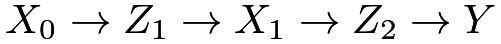 |
where
- •
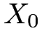
denotes the baseline pre-treatment covariates; - •
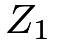
denotes the treatment at time point 1; - •
 denotes the time-varying covariates between the treatments at time points 1 and 2;
denotes the time-varying covariates between the treatments at time points 1 and 2; - •
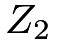
denotes the treatment at time point 2; - •
 denotes the outcome.
denotes the outcome.
With binary treatments
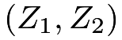
, each unit has four potential outcomes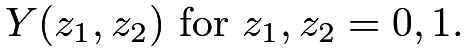 |
The observed outcome equals
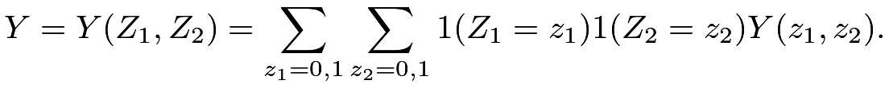 |
I will focus on the canonical setting with sequential ignorability, that is, the treatments are sequentially randomized given the observed history.
Assumption 29.1 (sequential ignorability)
(1) is randomized given :
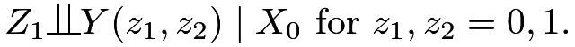 |
(2)
is randomized given 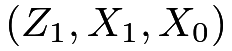
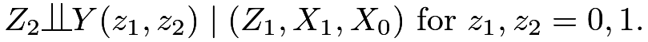 |
Figure 46 is a simple causal diagram corresponding to Assumption 29.1, which does not contain any unmeasured confounding.
 between and . The causal diagram conditions on the pre-treatment covariates .
between and . The causal diagram conditions on the pre-treatment covariates .Figure 47 is a more complex causal diagram corresponding to Assumption 29.1. Sequential ignorability rules out only the confounding between the treatment and the outcome , but allows for unmeasured confounding between the time-varying covariate and the outcome .
The possible existence of causes many subtle issues even under sequential ignorability.
and . The causal diagram conditions on the pre-treatment covariates .150 g-formula and outcome modeling
Recall the outcome-based identification formula with a treatment at a single time point:
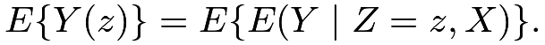 |
With discrete  , it reduces to
, it reduces to
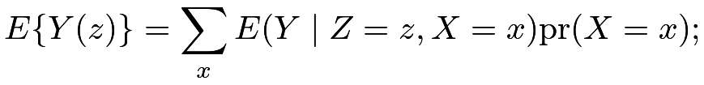 |
with continuous , it reduces to
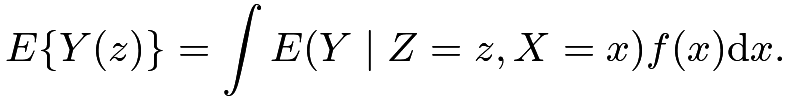 |
The following result extends it to the setting with treatments at two time points.
Theorem 29.1
Under Assumption 29.1,
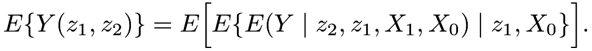 |
(139) |
In Theorem 29.1, I simplify the notation ‘
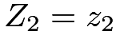
” to “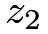
”. To void complex formulas in this chapter, I will use the lowercase letter to represent the event that the random variable takes the corresponding value. With discrete and, the identification formula (139) reduces to
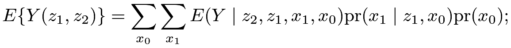 |
(140) |
with continuous and , the identification formula (139) reduces to
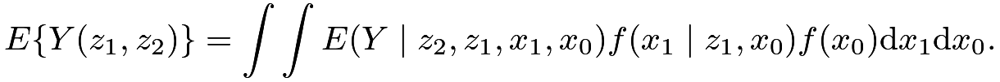 |
(141) |
Compare (140) with the formula based on the law of total probability to gain more insights:
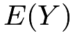 |
 |
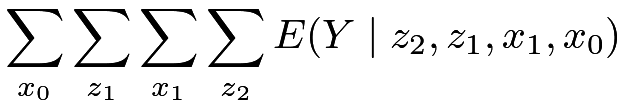 |
(142) | ||
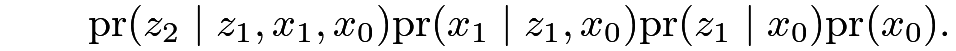 |
Erasing the probabilities of and in (142), we can obtain the formula (141). This is intuitive because the potential outcome
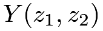
has the meaning of fixing and at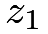
and , respectively.Proof of Theorem 29.1: By the tower property,
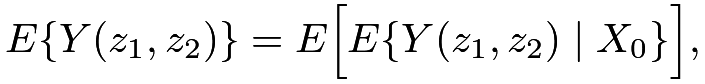 |
so I will focus on
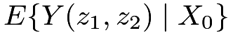
. By Assumption 29.1(1) and the tower property, |
|
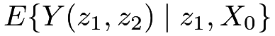 |
||
|
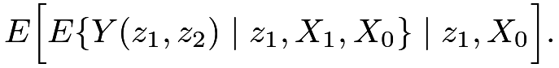 |
By Assumption 29.1(2),
|
|
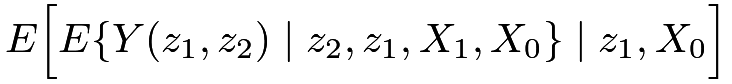 |
||
|
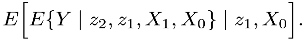 |
The formula (139) follows.

150.1 Plug-in estimation based on outcome modeling
The g-formulas (140) and (141) suggest that to estimate the means of the potential outcomes, we need to model
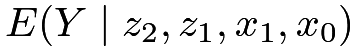
,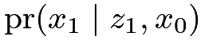
and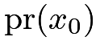
. With these fitted models, we can plug them into the g-formulas.With some special functional forms, this task can be simplified. Example 29.1 below gives the results under a linear model for the outcome.
Example 29.1
Assume a linear outcome model
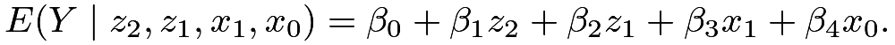 |
We can verify that
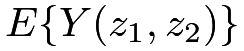 |
|
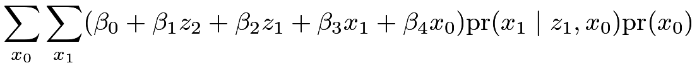 |
||
|
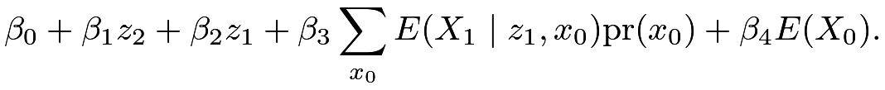 |
Define
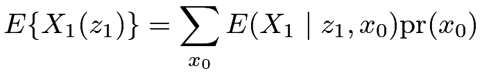 |
(143) |
to simplify the formula as
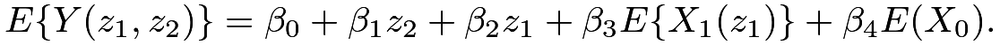 |
In (143), I introduce the potential outcome of 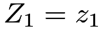 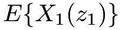 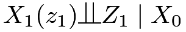 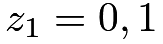 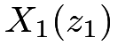 under the treatment
Define 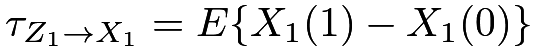
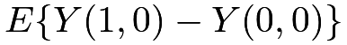 |
|
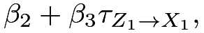 |
||
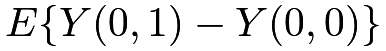 |
|
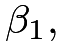 |
||
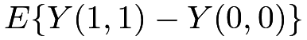 |
|
Therefore, we can estimate the effect of on based on the above formulas by first estimating the regression coefficients  s and the average causal effect of on using standard methods.
s and the average causal effect of on using standard methods.
If we further assume a linear model for
then and
|
(144) | ||||
|
(145) | ||||
|
(146) |
The formulas in (144)–(146) are intuitive based on Figure 48 with regression coefficients on the arrows. In (144), the effect of equals the sum of the coefficients on the paths and ; in (145), the effect of equals the coefficient on the path ; in (146), the total effect of equals the sum of the coefficients on the paths , and .
However, Robins and Wasserman, (1997) pointed out a surprising drawback of the plug-in estimation based on outcome modeling. They showed that with model misspecification in this strategy, data analyzers may falsely reject the null hypothesis of zero causal effect of on even when the true effect is zero in the data-generating process. They called it the g-null paradox. Perhaps surprisingly, they show that the g-null paradox may even arise in the simple linear outcome model in Example 29.1. McGrath et al., (2021) revisited this paradox. See Problem 29.1 for more details.
150.2 Recursive estimation based on outcome modeling
The plug-in estimation in Section 150.1 involves modeling the time-varying confounder and causes the unpleasant g-null paradox. It is not a desirable method.
Recall the outcome regression estimator with a treatment at a single time based on . We first fit a model of on using the subset of the data with , and obtain the fitted values for all units. We then obtain the estimator
Similarly, the recursive expectation formula in (139) motivates a simpler method for estimation. Start from the inner conditional expectation, denoted by
We can fit a model of on using the subset of the data with , and obtain the fitted values for all units. Move on to outer conditional expectation, denoted by
We can fit a model of on using the subset of data with , and obtain the fitted values for all units. The final estimator for  is then
is then
The above recursive estimation does not involve fitting a model for and avoids the g-null paradox. See Problem 29.2 for a special case. However, the estimator based on recursive regression is not easy to implement because it involves modeling variables that do not correspond to the natural structure of the causal diagram, e.g., .
151 Inverse propensity score weighting
Recall the IPW identification formula with a treatment at a single time point:
The following result extends it to the setting with a treatment at two time points. Define
and
as the propensity scores at time points 1 and 2, respectively.
Theorem 29.2
Under Assumption 29.1,
| (147) |
Theorem 29.2 reveals the omitted overlap assumption:
for all and . If some propensity scores are 0 or 1, then the identification formula (147) blows up to infinity.
Proof of Theorem 29.2: Conditioning on and using Assumption 29.1(2), we can simplify the right-hand side of (147) as
| (148) | |||||
|
|||||
|
|||||
|
where (148) follows from the tower property.
Conditioning on and using Assumption 29.1(1), we can simplify the right-hand side of (148) as
|
||||
|
where, again, the last line follows from the tower property.
The estimator based on IPW is much simpler which only involves modeling two binary treatment indicators. First, we can fit a model of on to obtain the fitted values and fit a model of on to obtain the fitted values for all units. Then, we obtain the following IPW estimator:
Similar to the discussion in Chapter 11, the HT estimator is not invariant to the location shift of the outcome and suffers from instability in finite samples. A modified Hajek-type estimator is , where
152 Multiple time points
Extending the estimation strategies in Sections 150 and 151 is not immediate with multiple time points. Even with a binary treatment and  time points, the number of treatment combinations grows exponentially with (for example, and ). Consequently, the outcome regression and IPW estimators in Sections 150 and 151 are not feasible in finite samples because they require enough data for every combination of the treatment levels.
time points, the number of treatment combinations grows exponentially with (for example, and ). Consequently, the outcome regression and IPW estimators in Sections 150 and 151 are not feasible in finite samples because they require enough data for every combination of the treatment levels.
152.1 Marginal structural model
A powerful approach is based on the marginal structural model (MSM) (Robins et al.,, 2000; Hernán et al.,, 2000). For simplicity of notation, I will only present the MSM with although its main use is in the general case.
Definition 29.1 (MSM)
The marginal mean of equals
A leading example of Definition 29.1 is . It is also straightforward to include the baseline covariates in the model. Definition 29.2 below extends Definition 29.1.
Definition 29.2 (MSM with baseline covariates)
The mean of conditional on equals
A leading example of Definition 29.2 is
| (149) |
If we observe all the potential outcomes, we can solve from the following minimization problem:
| (150) |
For simplicity, I focus on the least squares formulation. We can also extend the discussion to general models; see Problem 29.4 for an example of the logistic model.
Under sequential ignorability, we can solve from the following minimization problem that only involves observables.
152.2 Structural nested model
A key problem of IPW is that it is not applicable if the overlap assumption is violated. To address this challenge, Robins proposed the structural nested model. Again, to simplify the presentation, I only review the version with two time points.
Definition 29.3 (structural nested model)
The conditional effect at time point 1 is
for all , and the conditional effect at time point 2 is
for all
In Definition 29.3, two logical restrictions are
and
Two leading choices of Definition 29.3 are below.
Example 29.2
Assume
Example 29.3
Assume
Compare Definitions 29.2 and 29.3. The structural nested model allows for adjusting for the baseline covariates as well as the time-varying covariates whereas the marginal structural model only allows for adjusting for the baseline covariates. The estimation under Definition 29.3 is more involved. A strategy is to estimate the parameter based on estimating equations.
I first introduce two important building blocks for discussing the estimation. Define
and
They are not directly computable from the data because they depend on the true value of the parameter . At the true value, they have the following properties.
Lemma 29.1 involves a subtle notation because is random. It should be read as . Based on the definitions and Lemma 29.1, acts as the control potential outcome before receiving any treatment and acts as the control potential outcome after receiving the treatment at time point 1.
Proof of Lemma 29.1: Part 1. We have
|
||||
|
and
|
||||
|
so
|
||||
|
where the last identity follows from sequential ignorability. Since the last term does not depend on , we also have
Part 2. Using the above results, we have
|
||||
|
||||
|
||||
|
||||
|
||||
|
Since the last term does not depend on , we also have
Theorem 29.4
Proof of Theorem 29.2: Use the tower property by conditioning on and Lemma 29.1 to obtain
|
Use the tower property by conditioning on to show that the last identity equals 0 because
Similarly, use the tower property by conditioning on and Lemma 29.1 to obtain
|
Use the tower property by conditioning on to show that the last identity equals 0 because
To use Theorem 29.4, we must specify and to ensure that there are enough equations for solving . Example 29.4 below revisits Example 29.2.
Example 29.4
Under Example 29.2, we can choose and to obtain
|
 |
|||
|
|
|||
|
 |
We can then solve for the ’s from the above linear equations; see Problem 29.6. A natural question is whether alternative choices of can lead to more efficient estimators. The answer is yes. For example, we can choose many and use the generalized method of moment (Hansen,, 1982). The technical details are beyond this book.
Naimi et al., (2017) and Vansteelandt and Joffe, (2014) provided tutorials on the structural nested models.
153 Homework problems
29.1 g-null paradox
Consider the simple causal diagram in Figure 49 without pre-treatment covariates and without the arrows from to . So the effect of on is zero.
and . The causal diagram ignores the pre-treatment covariates .Remark:
However, in the first condition rules out the dependence of on , contradicting the existence of unmeasured confounder between and ; the independence of on rules out the dependence of on , contradicting with the existence of the arrow from on . That is, if there is an unmeasured confounder between and and there is an arrow from on , then the formula of in Example 29.1 must depend on , which leads to a contradiction with the absence of arrows from to .
29.2 Recursive estimation under the null model
29.3 IPW under MSM
Prove Theorem 29.3.
29.4 A nonlinear example of Definition 29.2
Another leading example of Definition 29.2 is
| (151) |
If we observe all potential outcomes, we can solve by minimizing the expectation of the negative log-likelihood function (see Chapter 31.F.2 for a simpler version):
| (152) |
where
Under sequential ignorability, we can solve from the following minimization problem that only involves observables.
Prove Theorem 29.5.
29.5 Structural nested model with a single time point
Recall the standard setting of observational studies with IID data drawn from . Define the propensity score as  . Assume
. Assume
 |
and the following structural nested model.
Definition 29.4 (structural nested model with a single time point)
The conditional mean of the individual effect is
In Definition 29.4, a logical restriction is . Prove the following results.
- 1.
We have
- 2.
We have
(153) for any function
 , provided that the moment exists.
, provided that the moment exists.
Remark: Equation (153) is the basis for parameter estimation. Consider a special case of Definition 29.4 with . Choose to obtain
Solve for to obtain
Therefore, equals the coefficient of  in the TSLS of on with
in the TSLS of on with  being the IV for . With some basic calculations, we can also show that
being the IV for . With some basic calculations, we can also show that
Therefore, equals the coefficient of in the OLS of on , which appeared in Chapter 72 before.
Consider another special case of Definition 29.4 with . Choose to obtain
That is, equal the coefficients in the TSLS of on with being the IV for .
29.6 Estimation under Example 29.4
We can estimate the ’s by solving the empirical version of the estimating equations in Example 29.4. We first estimate the two propensity scores and obtain the centered treatment
at time point 1 and
at time point 2.
Show that we can estimate and by running TSLS of  on with as the IV for , and then we can estimate
on with as the IV for , and then we can estimate  by running TSLS of on with as the IV for .
by running TSLS of on with as the IV for .
29.7 g-formula with a treatment at multiple time points
Extend the discussion to the setting with time points. The temporal ordering (but not the causal diagram) of the variables is
Introduce the notation and with lower case and denoting the corresponding realized values. With , we have and is empty. Each unit has potential outcomes:
Assume sequential ignorability below.
Assumption 29.2 (sequential ignorability at multiple time points)
We have
for all  and all
and all
Prove Theorem 29.6 below.
Theorem 29.6 (g-formula with multiple time points)
Under Assumption 29.2,
29.8 IPW with treatments at multiple time points
Inherit the setting of Problem 29.7. Define the propensity score at time points as
|
||||
|
||||
|
Prove Theorem 29.8 below assuming overlap implicitly.
Theorem 29.7 (IPW with multiple time points)
Under Assumption 29.2,
Based on Theorem 29.8, construct the Horvitz–Thompson and Hajek estimators.
29.9 MSM with treatments at multiple time points
The number of potential outcomes grows exponentially with . The formulas in Problems 29.7 and 29.8 are not directly applicable in finite samples. We can impose the following structural assumptions on the potential outcomes.
Definition 29.5 (MSM with multiple time points)
Assume
If we know all the potential outcomes, we can solve from the following minimization problem:
Theorem 29.8 below shows that under Assumption 29.2, we can solve from a minimization problem that only involves observables.
Theorem 29.8 (IPW for MSM with multiple time points)
Under Assumption 29.2,
29.10 Structural nested model with treatments at multiple time points
Inherit the setting from Problem 29.7 and the notation from Problem 29.8. This problem presents a general structural nested model.
Definition 29.6 (structural nested model with multiple time points)
The conditional effect at time  is
is
for all and all .
Theorem 29.9
 , provided that the moment exists.
, provided that the moment exists.Remark: Choosing appropriate ’s, we can estimate by solving the empirical version of Theorem 29.9.
29.11 Recommended reading
Robins et al., (2000) reviewed the MSM. Naimi et al., (2017) reviewed the g-methods.